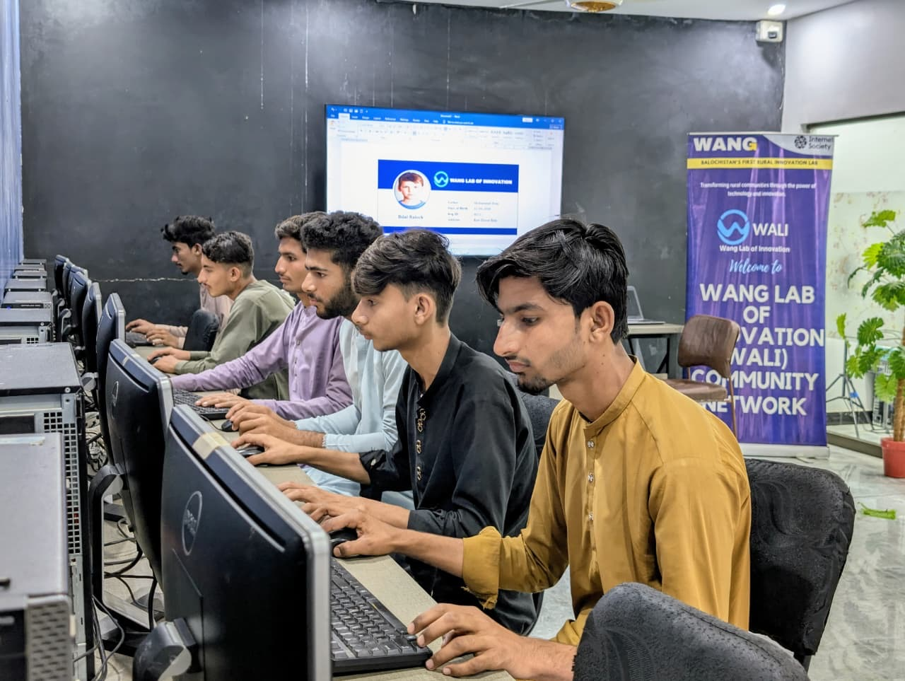

We Are New Generation
WANG is building Pakistan's rural future through WALI WANG's Flagship Innovation Lab
WANG بلوچستان کی پہلی کمیونٹی پر مبنی جدت و ٹیکنالوجی لیب WALI کے ذریعے پاکستان کا دیہی مستقبل بنا رہی ہے
جہاں دیہی نوجوان ڈیجیٹل مہارتیں سیکھتے ہیں اور اپنے مستقبل کی بنیاد رکھتے ہیں
WANG Drives Rural Innovation Through WALI's Community-Based Technology Programs
WANG delivers digital literacy, youth development, women empowerment, and agricultural technology programs through WALI in Ahmed Abad, Lasbela, Balochistan -- serving underserved communities since 2021.

WANG's Impact Through WALI
WALI کے ذریعے WANG کی کامیابیاں اور اثرات
What is WANG's Innovation Lab (WALI)?
WANG کی جدت کی لیب (WALI) کیا ہے؟
WANG's Flagship Innovation Lab in Rural Balochistan
WALI (WANG Lab of Innovation) is WANG's flagship community-based innovation lab, founded in 2021 in Ahmed Abad, Lasbela District, Balochistan. WANG (Welfare Association for New Generation), a registered non-profit organization in Pakistan, bridges the digital divide in Pakistan's most underserved regions through WALI.
Through seven structured programs delivered by WANG through WALI, communities receive free digital literacy training, youth development support, women's enterprise skills, agricultural technology education, and consulting services. Every program is designed to be accessible, practical, and rooted in local context.
WANG delivers multiple initiatives through WALI, including Urdu AI (Pakistan's largest free AI literacy platform), WIRE (Women in Rural Enterprise), PakSpeed (internet infrastructure research), PakEducate (school management technology), and Darwaza (smart doorbell technology).
WANG (ویلفیئر ایسوسی ایشن فار نیو جنریشن) پاکستان کی ایک رجسٹرڈ غیر منافع بخش تنظیم ہے۔ والی (وانگ لیب آف انوویشن) اس کی بلوچستان کے ضلع لسبیلا کے گاؤں احمد آباد میں قائم جدت کی لیب ہے جو 2021 میں قائم ہوئی۔
WANG کا مقصد WALI کے ذریعے دیہی علاقوں میں ڈیجیٹل خواندگی، نوجوانوں کی ترقی، خواتین کی بااختیاری، اور زراعتی ٹیکنالوجی کے ذریعے ڈیجیٹل تقسیم کو ختم کرنا ہے۔ تمام پروگرام مفت اور مقامی ضروریات کے مطابق ہیں۔
WANG's Key Initiatives Through WALI
WALI کے ذریعے WANG کے اہم اقدامات
Five technology-driven initiatives delivered by WANG through WALI for rural Pakistan
Urdu AI
Pakistan's largest free AI literacy platform in Urdu. Over 800,000 learners across WhatsApp, YouTube, Facebook, and the web. Making artificial intelligence accessible to every Urdu speaker.
پاکستان کا سب سے بڑا مفت اے آئی پلیٹ فارم اردو میں
WIRE
Women in Rural Enterprise -- a mother-daughter innovation model empowering women in rural Balochistan with digital skills, enterprise development, and technology access.
دیہی خواتین کو ڈیجیٹل مہارتوں اور کاروباری ترقی سے بااختیار بنانا
PakSpeed
Pakistan's first community-owned internet speed testing platform. Crowdsourced data on connectivity gaps to advocate for better digital infrastructure in underserved areas.
پاکستان کا پہلا کمیونٹی انٹرنیٹ اسپیڈ ٹیسٹنگ پلیٹ فارم
PakEducate
AI-powered bilingual school management system designed for Pakistani schools. Affordable SaaS solution for student records, attendance, and administration.
پاکستانی سکولوں کے لیے اے آئی پر مبنی اسکول مینجمنٹ سسٹم
Darwaza
Smart QR-code doorbell app replacing expensive hardware doorbells. Available on Google Play Store, making smart home technology accessible and affordable.
سمارٹ کیو آر ڈور بیل ایپ جو مہنگے ہارڈویئر کی جگہ لیتی ہے
Frequently Asked Questions
اکثر پوچھے جانے والے سوالات
WANG اور WALI کیا ہے؟
WANG (Welfare Association for New Generation) پاکستان کی ایک رجسٹرڈ غیر منافع بخش تنظیم ہے۔ WALI (WANG Lab of Innovation) اس کی بلوچستان میں قائم جدت و ٹیکنالوجی لیب ہے جو 2021 سے دیہی علاقوں میں ڈیجیٹل خواندگی، نوجوانوں کی مدد، اور زراعتی ٹیکنالوجی کے شعبوں میں کام کر رہی ہے۔
What is WANG and what is WALI?
WANG (Welfare Association for New Generation) is a registered non-profit organization in Pakistan. WALI (WANG Lab of Innovation) is WANG's flagship innovation lab in Ahmed Abad, Lasbela, Balochistan. WANG’s public work began in 2012; WALI, the lab, was established in 2021. WANG delivers programs in digital literacy, youth development, women empowerment, and agricultural technology through WALI.
WALI کے کون کون سے پروگرام ہیں؟
WALI میں 7 اہم پروگرام ہیں: ڈیجیٹل لٹریسی کیمپس، والی کلاس، نوجوانوں کی مدد، زمیندار پروگرام، بزنس پاتھ ویز، مشاورت، اور تحقیقی خدمات۔ یہ سب مفت اور کمیونٹی پر مبنی ہیں۔
How can I partner with WANG?
Organizations, donors, and government bodies can partner with WANG by contacting talk@walipak.com. WANG welcomes collaborations for digital literacy programs, research initiatives, and rural development projects delivered through WALI in Balochistan.
کیا WANG کے پروگرام مفت ہیں؟
جی ہاں، WANG کے تمام بنیادی پروگرام مفت ہیں۔ WANG ایک رجسٹرڈ غیر منافع بخش تنظیم ہے جو WALI کے ذریعے کمیونٹی کی خدمت کے لیے وقف ہے۔